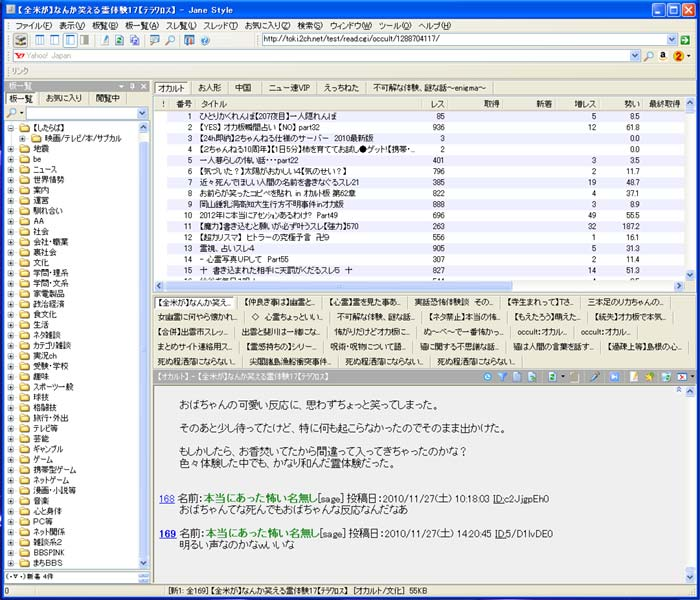
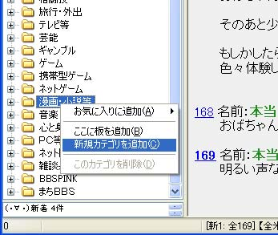
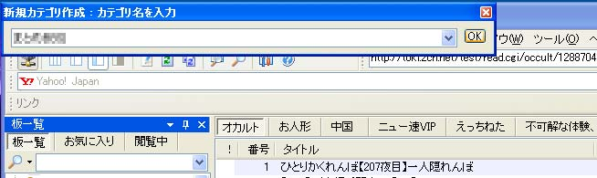
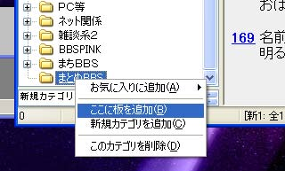
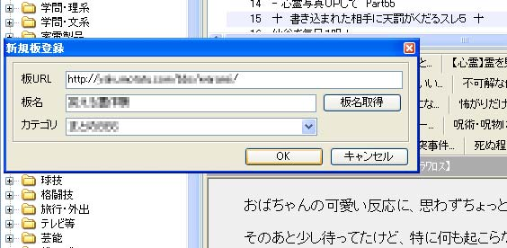
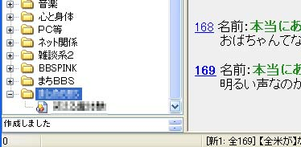

Jane系ブラウザでの設定方法 Jane系の専ブラはOpen Janeから派生し、Jane View、Jane Style、Jane Xeno等が有ります。Jane Style以外はインストーラは付いていないようで、ダウンロードしたzipファイルを適当な場所に解凍し、Jane2ch.exeを実行します。詳しい使い方についてはそれぞれのマニュアルを参照したり試行錯誤してみて下さい。２ちゃんねる以外の専ブラ対応掲示板の登録方法は大体同じなのでJane Styleで説明をさせて頂きます。 まずはJane Styleを起動します。  左側に板一覧が表示されるようにしておきましょう。  メニューが出てきますので「新規カテゴリを追加」を左クリックして選択します。  するとJane
Styleウィンドウの左上の部分にカテゴリ名を入力するウィンドウが出てきますので掲示板名の「BBS_TITLE」などの適当な名前を入力して「OK」ボタンをクリックします。 カテゴリのフォルダ？が一番下に追加されます。カテゴリ名は後でリネームできませんので、慎重に名前を考えて下さい。 URLのコピーができたらJane系ブラウザで先程作ったカテゴリを右クリックし「ここに板を追加」メニューを左クリックして選択します。   板を新規に登録するウィンドウが出てきます。URLのコピーが出来ていれば、Jane Styleでは「板URL」は自動で入力されます。それ以外のJane系ブラウザでは「板URL」の所で右クリックして「貼り付け」を選択して下さい。「板名」欄は最初は空白ですがJane Styleでは「板名取得」ボタンをクリックすると名前の取得ができます。他のJane系ブラウザでは板名を入力しましょう。後でリネームは出来ないので気に入らない場合はこの段階で修正しておきましょう。余り長い名前にすると後で不便な思いをします。「OK」ボタンをクリックすると板の登録が完了します。  これで掲示板を閲覧できます。 レスの書き込みや新規のスレ立ては普通にできます。 |